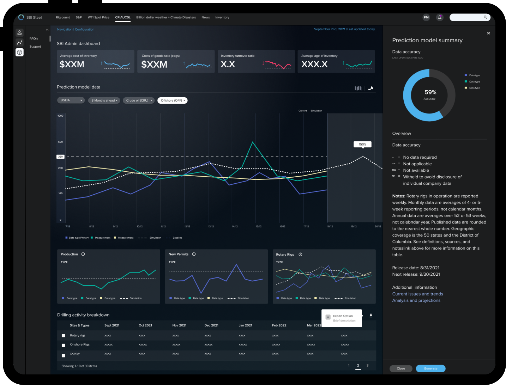
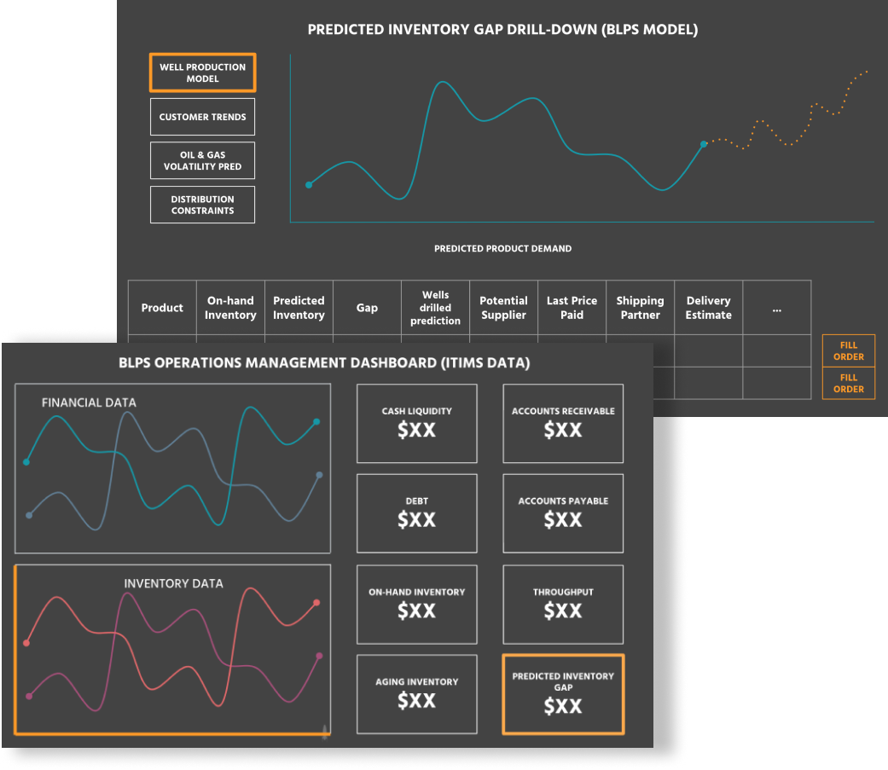
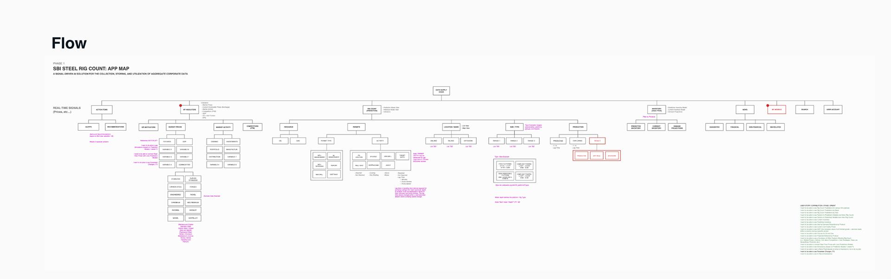
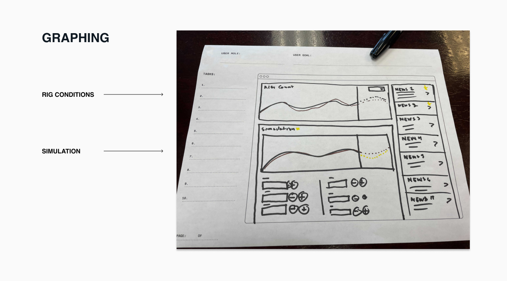
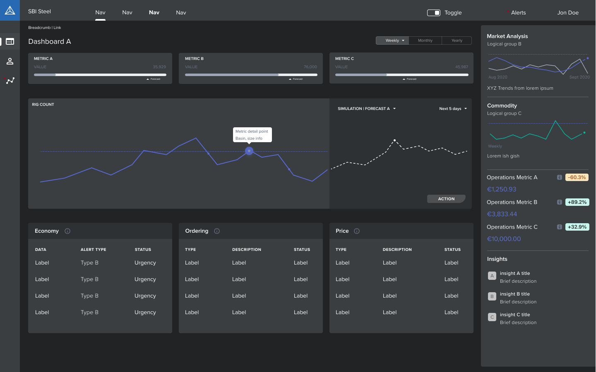
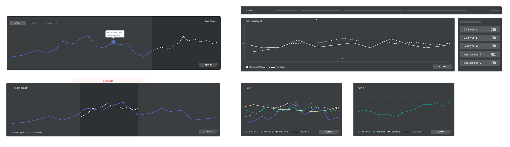
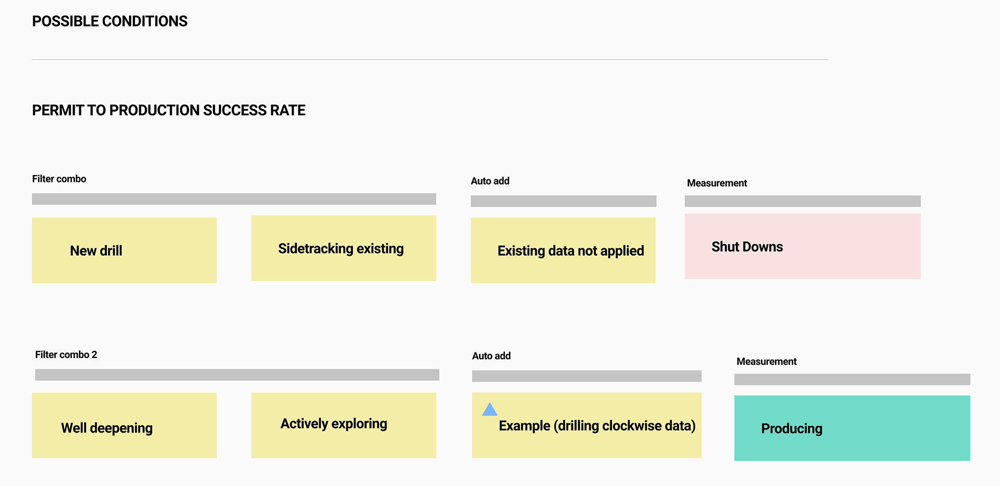
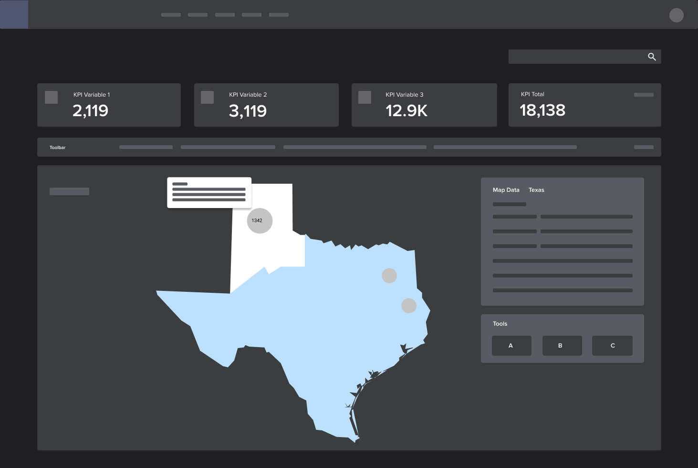
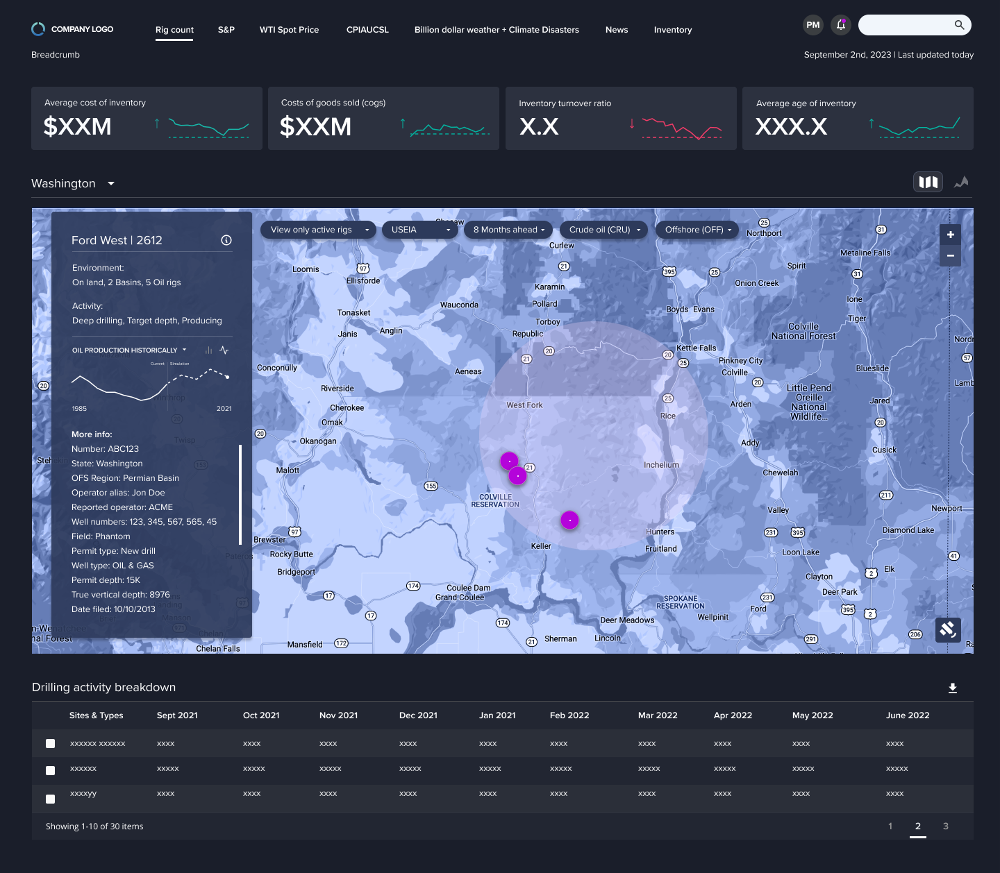

SBI · Oil & gas
Predictive operations for a physical supply chain.
SBI is a North American oil-and-gas supplier. The work was to make inventory, maintenance, and market weather readable enough to act on — then ship a V1 in six months that could grow into AI-assisted forecasting without pretending the data was already clean.

What shipped
A tailored design system and a first operations dashboard — prediction models, inventory and purchase views, and simulations that could hold environmental and policy change. The point of V1 was not a finished AI platform. It was a surface executives and operators could trust enough to plan production, hold buffer stock, and stay ahead of regulation.
Measurable inventory performance followed from the unglamorous work: optimized production, proactive compliance, and a shared picture of what the numbers actually meant. Financial and environmental sustainability sat in the same view, not in two reports.
Why this product exists
Oil-and-gas inventory is not a warehouse problem. Unplanned maintenance stops production. Lead times do not wait for a meeting. Market index, competitor posture, and purchase history all argue at once — and none of them live in the same spreadsheet an operator has open at 6 a.m.
If the model cannot show its gaps, nobody will let it set a purchase order.
What I owned
- Research into inventory turnover, marketplace index, competitor posture, and purchase models — then turning those into dashboard jobs, not a metrics dump.
- The information architecture for supply-chain flow: signals, KPIs, and market activity as a navigable map instead of a slide deck.
- Collaborative visualization with executives — rig count as the consistent focal point across otherwise competing layouts.
- Filter logic that fills missing dependencies (the “drilling clockwise” automation), map-based environmental context, and a design system built for dark, data-dense screens.
01
Four questions the dashboard has to answer
Inventory turnover: are we selling and replenishing, or paying to hold? Marketplace index: what is the industry weather? Competitor analysis: what are others stocking? Purchase models: what does history actually predict? Those four became the spine of the V1 — each one a view that could change a production schedule.

02
Maintenance as inventory risk
Unplanned downtime is a stock-out with a delay attached. The work was to forecast the inventory consequence of a maintenance calendar: predictive sensors for equipment, buffer math that includes lead time, and scenario plans so a shutdown is a rehearsal instead of a scramble.
03
A flow before a screen
Before pixels, a map of signals — oil-and-gas future, KPIs, market activity. That layout was the first honest look at user navigation: where supply chain actually moves, and which branch is an exception versus the daily path.

04
Rig count as the shared language
Executive workshops produced many layouts. Rig count survived all of them. Paper graphing of conditions versus simulation became dashboard modules: forecast extensions as horizontal bars, KPI tiles that can be scanned, inventory and purchase in a list that does not hide the next order.



05
Filters that complete the sentence
A filter combination is a claim about the world. If someone picks Well deepening and Actively exploring, and asks for a Producing measurement, the system still needs drilling-clockwise data — even if they never selected it. Automation fills the gap so the measurement is true, not just requested.
Clockwise drilling itself is a three-phase story: setup (attachments and location), completion (angle and depth — including a well being repurposed), activity (the bit is in the ground). Monitoring “active” is not a toggle. It is a phase change.

06
Environment is not a layer you add later
Soil, hydrocarbons, contaminants, and equipment phase all decide where you can drill and what you can run. Things change over months and years — that is what simulation had to hold. Maps and satellite data turned density and distribution into purchasing language: where demand will be, not only what last quarter sold.

